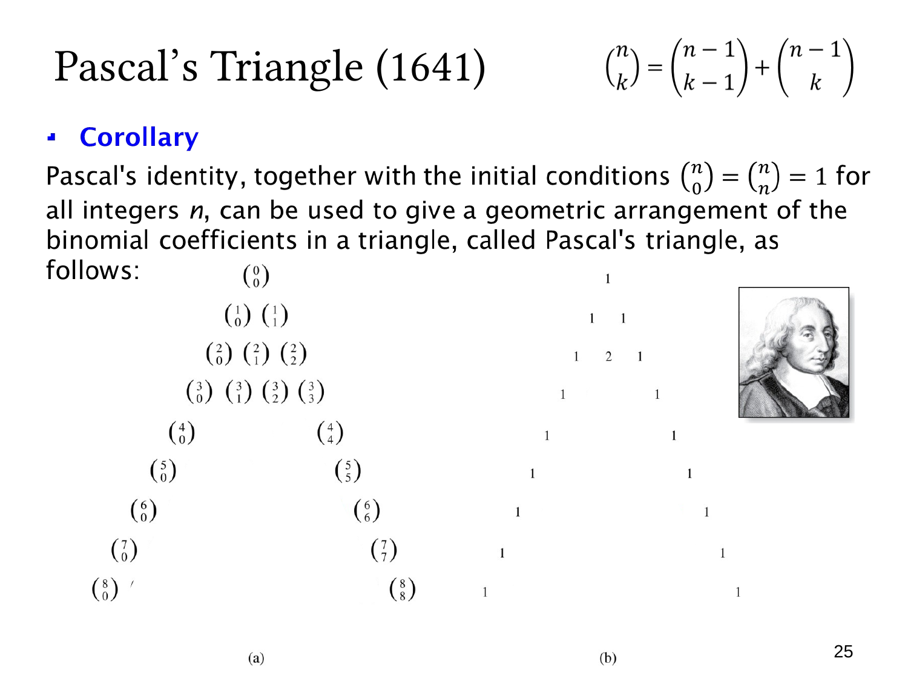

L1.7 · 第 25 页讲解原文
查看这一页课件

从第 2 行推进到第 3 行
本页左侧加入 (13) 与 (23)，将 n=3 行的四个符号补齐。它们分别由第 2 行的相邻项相加：
(13)=(02)+(12)=1+2=3,
(23)=(12)+(22)=2+1=3.
两端保持为 (03)=(33)=1，所以这一行是 1,3,3,1。
这里右侧数值演示仍主要停留在上一行，新增符号提示我们计算下一行的内部值。两个内部值相等，可用组合数对称性理解：从三人中选一人，与确定不入选的一人来选四人之外的剩余两人，所表达的是三元素集合选一或选二的互补选择，数量都是 3。
更直接地说，三元素集合有三个单元素子集，也有三个二元素子集。因此本行对应
(x+y)3=x3+3x2y+3xy2+y3.
逐行计算的依据始终是上一行，而每行中相同上标 n 表示同一个集合规模。
查看本页勘误
第 25 页讲解勘误
原讲解中“从三人中选一人，与确定不入选的一人来选四人之外的剩余两人”这一句表述有误。
正确的解释是：从三人中选两人，等价于确定唯一未入选的一人，因此 (13)=(23)=3。这里始终讨论同一个三元素集合，没有第四个人。
原始回答和 SHA-256 保留不变；本勘误作为独立说明显示。